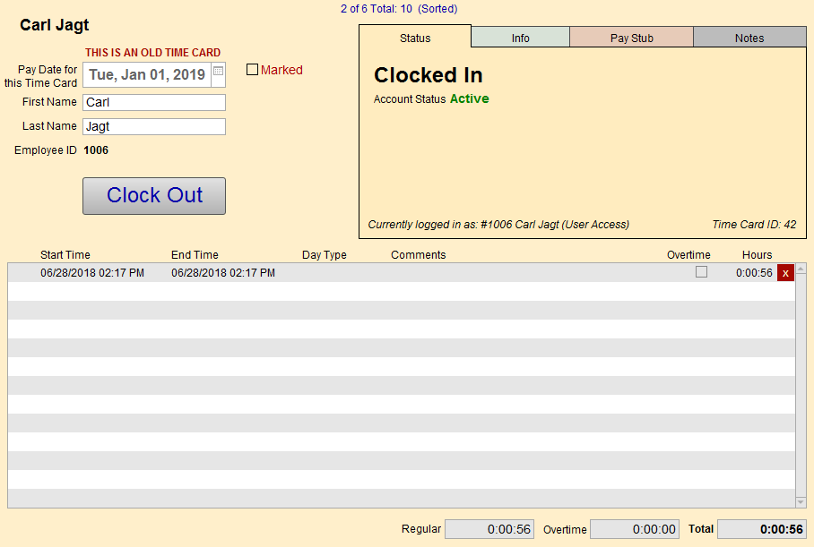

Time Cards Post-Login Screen
The following buttons are available after an employee logs in:
Time Cards Post-Login Screen Explained

Pay Date for this Time Card
-
Shows the pay date for the current time card.
-
Valid (future) dates appear in green.
-
Older (past) dates appear with the label "This is an old Time Card"
Employee Name Fields
-
Note: the Employee ID# is assigned when the Administrator creates a New User and cannot be changed.
Clock In/Clock Out Button
-
Sets the date/time stamp for Start and End Time line item entries.
Marked Checkbox
-
Use to identify any group of records which can be searched, e.g. make a list of certain time cards for an individual employee for printing.
Other Fields
-
No. of Records shows how many records are in the Time Cards file and how many make up a found set.
-
Status tab shows if the employee is active, or inactive e.g. on leave or a former employee (disabled login access).
-
Currently logged in as # shows with which account number you have logged in (e.g. if you have administrative privileges this # will be different than the Employee ID#).
-
The Time Card ID# is auto-created and is unique to each card.
Tabs
Note: If you change any of the data in any of these tabs, it will be changed it in all Time Cards for that Employee.
Status Tab
-
Shows the status of the current user and clock in/out status; shows if the employee is active, or inactive e.g. on leave or a former employee (disabled login access).
-
See: Status Tab
Info Tab
-
Shows employee-related details.
-
See: Info Tab
Pay Stub Tab
-
Shows details of the employee’s pay. It calculates their gross pay and allows for deduction entries (e.g. income tax, unemployment insurance).
-
See: Pay Stub Tab
Notes Tab
-
Contains a notes field where any other useful information can be stored.
-
See: Notes Tab
Line Item Entry Section
Edit Button
-
Allows the administrator to modify these times. Especially helpful if the employee forgot to login and still wants to get paid.
Start Time, End Time Fields
-
Shows when the employee clocked in and out.
-
Note: These fields can only be edited by the administrator.
Day Type Field
-
Allows you to specify the type of work day.
Comments Field
-
Use to record any anomaly, e.g. paid Federal holiday, clocked in late, etc.
Delete Button
-
Removes the current line item, user is prompted to confirm.
-
Useful when a user accidentally hits the clock in button twice and needed to remove a start time.
Sidebar Buttons
© 2023 Adatasol, Inc.